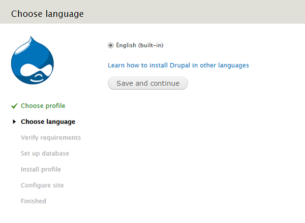
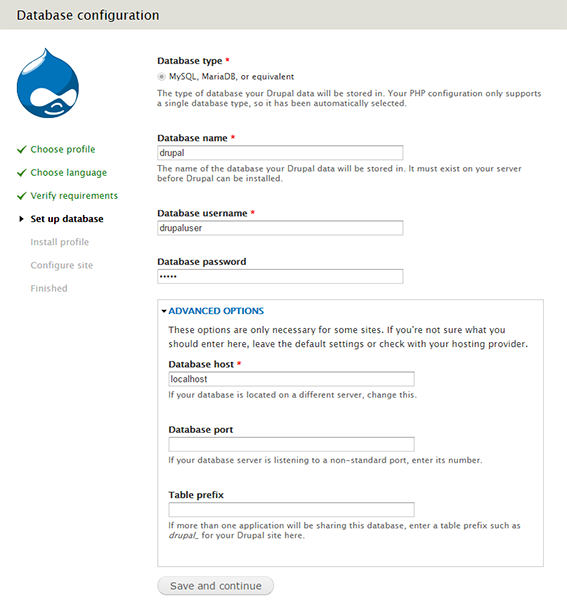
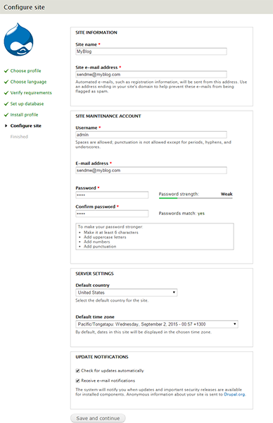
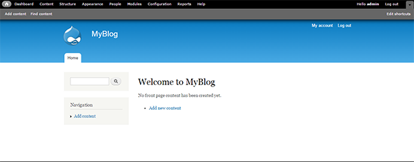

Install and configure Drupal on your LAMP server - Arch Linux, Apache, LAMP, Drupal
Install and configure Drupal on your LAMP server - Arch Linux
Drupal is one of the popular and open-source dynamic CMS for your blogs and website. Drupal is a free software package that allows you to easily organize, manage, and publish your content, with an endless variety of customization.
Before starting, you will need to install LAMP on your Debian and Ubuntu server. For more details, see Build a LAMP stack (Linux, Apache, MySQL, PHP) - Arch Linux.
Set up environment for Drupal
- Install the
php-gd, which will be required by Drupal in future.
sudo pacman -Syu
sudo pacman -S php-gd
- Open the configuration file of
php using the following command:
sudo vim /etc/php/php.ini
- Locate the
Dynamic Extensions section and uncomment the following line in the php.ini file.
extension=pdo_mysql.so
extension=mysql.so
extension=mcrypt.so
extension=gd.so
save and exit the file.
- Restart the Apache web server to make the changes effective.
sudo systemctl restart httpd.service
- Create a database for Drupal to store the basic settings and user data.
mysql -uroot -ppassword
Here, you need to use mysql root password which you provided during mysql installation.
CREATE DATABASE drupal;
- Add a new user for Drupal database.
CREATE USER drupaluser@localhost IDENTIFIED BY 'drupalpassword';
- Grant all privileges to the Drupal user.
GRANT SELECT,INSERT,UPDATE,DELETE,CREATE,DROP,INDEX,ALTER,CREATE TEMPORARY TABLES,LOCK TABLES ON drupal.* TO drupaluser@localhost;
- Reload the MySQL database privileges to activate the new MySQL user.
FLUSH PRIVILEGES;
exit
Set up Drupal
- Download the Drupal stable version from the official site using the following command:
cd /srv/http
sudo wget http://ftp.drupal.org/files/projects/drupal-7.39.tar.gz
- Extract the Drupal compressed file using the following command:
sudo tar zxvf drupal-7.39.tar.gz
- Rename the Drupal extracted folder to drupal for easy access.
sudo mv drupal-7.39 drupal
- Change permission to 755 to the Drupal directory.
sudo chmod -R 755 /srv/http/drupal
sudo chown -R http:http /srv/http/drupal
Install Drupal
- Open the browser, and type FQDN or Public IP in the browser to start the installation of drupal for your blog.
http://public_ip/drupal
- Select an installation type.

- Choose the language.

- In Database configuration, type the correct information of database. Under Advanced Options, give the Database host, Database port, and Table prefix, and then click Save and continue.

- Configure your blog and website information on the Configure site page. Type the appropriate information, and then click Save and continue.

This process may take some time.
- On the Drupal installation complete page, click the Visit your new site link to go to your Drupal web site.

- You will see a Welcome to MyBlog page for your Drupal Blog. You can start blogging here.

Conclusion
In this article, you learned to install and configure Drupal on your LAMP server with Arch Linux.